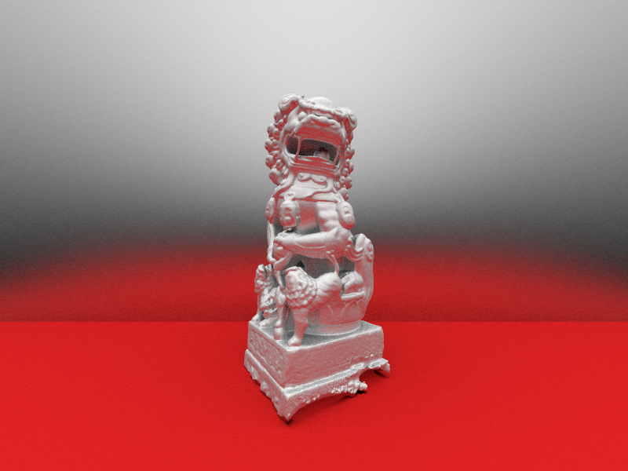
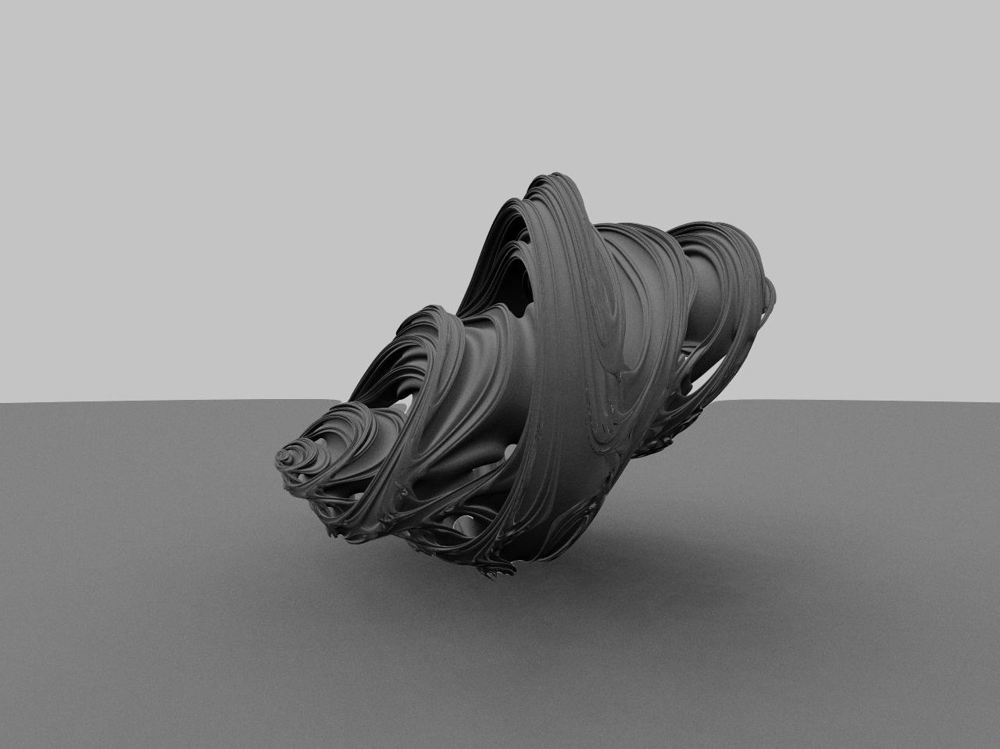
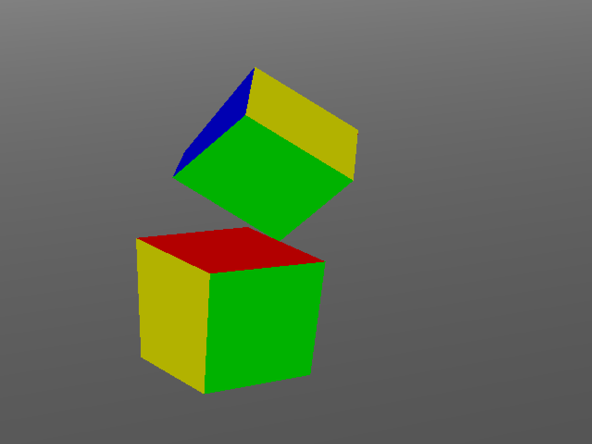

Projects
WasteTracer
This is a GPU accelerated path tracer using Metal compute shaders. You can load OBJ meshes into it and it will generate a path traced image. It supports Blinn-Phong materials (as they seem to be the only material supported by OBJ files) and is accelerated using SAH KD-trees.
This image is of a lion model, which has 300k faces and took 1430s to render at 256spp at 800x600.
Julia
A small weekend project I made when I had nothing to do. It's a path traced render of a quarternion Julia set, which I think is one of the cooler looking fractals out there. I learned to implement this from this blog.
It's implemented in a shader on ShaderToy, which is a website that lets you program in a shader language similar to GLSL and have it render in browser.
Jiggle
A 3D simulation of deformable solids using a mass-spring model. I implemented a semi-implicit Euler method (Baraff-Witkin) to solve the dynamics of the springs.
This also supports dynamic collision detection, which is sped up with the use of an in-place bounding volume oct-tree. Collision response is still a work in progress, however.
Rendering is taken care of using immediate mode OpenGL, which is why the graphics look absolutely terrible.
wasteEngine

My first attempt at making a 3D graphics engine. It's written in C++, with the rendering taken care of by OpenGL and windowing with GLUT.
Meshes can be loaded as models from OBJ files, with the mesh processing taken care of by ASSIMP. Textures can also be loaded in to texture these models.
The image to the left is of a dragon mesh I downloaded from the internet textured with a picture of my friend Ernest.
FluidCanvas

This is an implementation of a solution to the Navier-Stokes equations for incompressible fluids. It also supports vorticity confinement. Most of the theory is explained here if you want to build something similar.
I wanted it to be interactive through a browser, so I implemented it in Javascript and canvas. Click around here to play with it.
Free surface tracking is supported using marker cells and particles, but it suffers from pretty bad volume loss.
Ray Tracer

A CPU based implementation of a recursive ray tracer in C++. It calculates color values using Blinn-Phong lighting. Supports shadows and reflections.
Reads in scene files and writes out an image in the ppm format.
The image to the left is a rendering of the Cornell Box.
Voxel Renderer

This is a program that generates voxel data, then renders it. The application is written in C++, with the voxel data generation being done in CUDA C and the rendering by OpenGL using CUDA/OpenGL interoperability.
This was originally intended to be an implementation of Marching Cubes, but I had to start school before I could really get it off the ground.
The image to the left is a frame shown where the CUDA kernel generating the voxel data generates a checkerboard pattern. Other kernels could be made, but at the moment all this does is render a checkered cube.